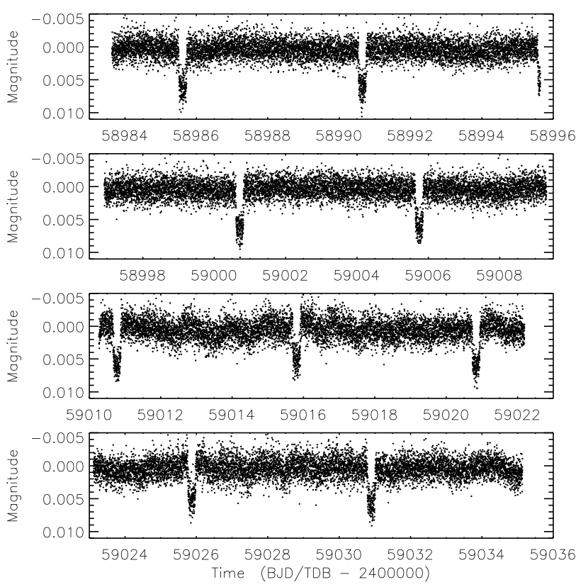
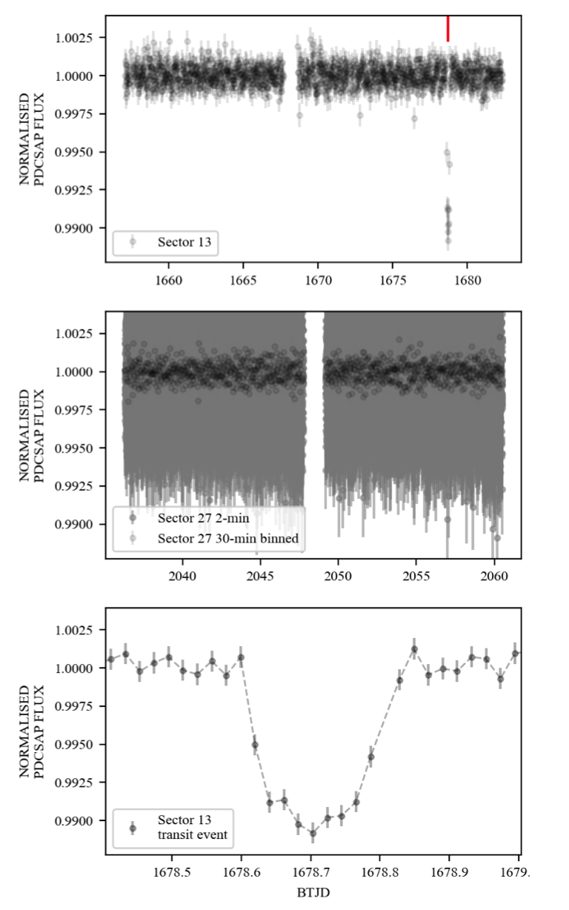
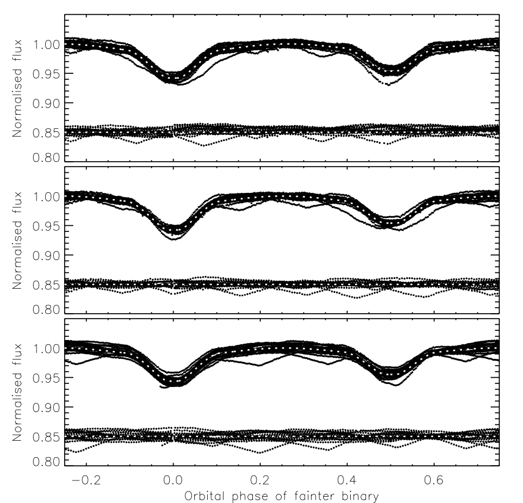

Welcome TESS followers! This week we are looking at three papers from the archive.
The transiting planetary system WASP-86/KELT-12: TESS provides the casting vote (Southworth et. al., 2022) :
In 2016/2017 two teams independently published their discovery of a transiting planetary system. This system is known as WASP-86 (Faedi et al. 2016) by one team and KELT-12 (Stevens et al. 2017) by the other. In each paper the teams derive very different system parameters, with the most noticeable being a factor of three difference in the measured radius of the planet.
Using data from TESS, the authors of this paper have derived new system parameters finding a stellar mass of 1.278 MSun and a stellar radius of 2.02 RSun. The planetary mass was also estimated as 0.833 MJup with a radius of 1.382 RJup.
The authors state that the discrepancy between parameters presented in earlier papers was caused by a "disagreement over the transit depth and duration". The authors then go on to explain that this inaccuracy was caused by the transit being long and shallow and as such not suitable for follow-up photometry from ground-based telescopes. See this paper for more information about the dual named system.
TIC-320687387 B: a long-period eclipsing M-dwarf close to the hydrogen burning limit (Gill et. al., 2022) :
TIC-320687387 is a bright (TESSmag=11.6) G-dwarf star observed by TESS in Sectors 13 and 17, and seen to have a single transit.
Using data from CORALIE, the Next Generation Transit Survey (NGTS), and Lesedi the authors of this paper have determined that the transiting object, TIC-320687387 B, is a low mass star with a mass of 96.2.MJ, radius of 1.14 RJ, period of 29.77381 days, and eccentricity of 0.366.
Given its mass and radius TIC-320687387 B is close to the hydrogen burning limit ∼80MJ. The fact that a system like TIC-320687387 AB exits also allows scientists to test stellar evolution models for low-mass stars, which are needed to calculate accurate masses and radii for exoplanets orbiting single low-mass stars.
Rediscussion of eclipsing binaries. Paper VIII. The doubly-eclipsing quadruple star system V498 Cygni (Southworth 2022b) :
Using TESS data the authors of this paper have discovered a second set of eclipses for V498 Cyg, an early B-type binary which has eclipses with a period of 3.48 days and possesses two sets of spectral lines. The second set of newly discovered eclipses have a 1.44 d period.
Through the development of a model the authors were able to simultaneously fit the properties of both eclipsing binaries, and whilst the fainter system is fit well, the brighter system is not. The model is unable to reproduced the asymmetric primary eclipse or its changing light curve shape.
TESS data was used to determine the orbital ephemerides and the physical properties of the stars with the masses of the brighter binary being MSun and 11 MSun, and the fainter binary as 6.5 MSun and 3.5 MSun. See this paper for more details.

Fig. 1: Taken from Southworth et. al., (2022). TESS short-cadence PDCSAP photometry of WASP-86 / KELT-12. The top two panels show the data for sector 25 and the bottom two panels show the data for sector 26.

Fig. 2: Taken from Gill et. al., (2022). TESS SPOC light-curves for sector 13 (30-minute cadence; upper panel) with the single transit event marked (red) along with sector 27 (2- minute cadence; middle panel). A closer look at the single-transit event in sector 13 is shown in the lower panel.

Fig. 3: Taken from Southworth (2022b). Best fit to the TESS SAP data in sectors 14 (top panel), 15 (middle) and 41 (bottom) for binary B. In each panel the TESS data are shown after subtraction of the model light curve of binary A, third light and the quadratic function. The best fits are shown with white dotted lines superimposed on the data. The residuals are shown at the base of each panel, offset from zero.